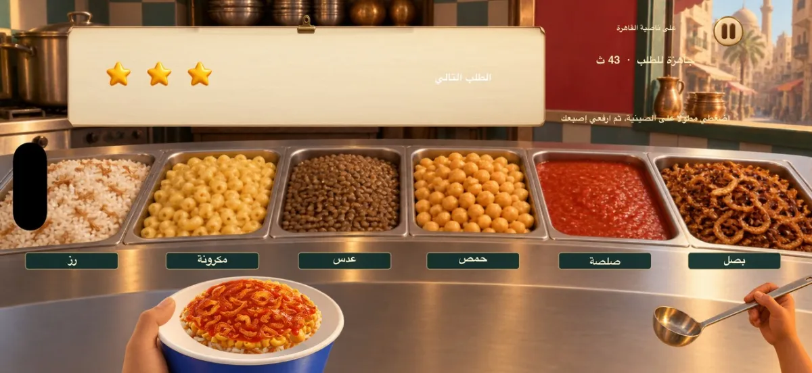

إطلاق · كشري بابا عبده للآيفون · Read in English
لعبة طبخ الكشري للآيفون: «كشري بابا عبده» متاحة الآن
«كشري بابا عبده» لعبة طبخ كشري مجانية للآيفون، صُنعت بالعربية. استغرقت ستة أسابيع ومحركَي ألعاب، ونموذجًا ثلاثي الأبعاد أحببته، ونسخة مسطحة كدت ألا أجربها.

وافقت Apple اليوم على «كشري بابا عبده». في اللعبة تدير محل كشري صغيرًا في حارة من حواري القاهرة. لكل جار طلبه المعتاد، وأنت تبني كل طبق بالطبقات الصحيحة: الأرز، والمكرونة، والعدس، والحمص، والصلصة، والبصل المحمّر. القصة سبعة أيام. اللعبة مجانية، ولا توجد فيها مشتريات داخل التطبيق.
اللعبة التي تنزّلها اليوم ليست اللعبة التي بدأتها. هذه التدوينة تعرض النسخ التي جاءت بينهما، بلقطات حقيقية من كل نسخة.
اليوم الأول: نموذج ثنائي الأبعاد
في 10 أكتوبر كانت عندي صورة واحدة للفكرة: محل كشري دافئ، نراه بعين البائع، فيه مغرفة وطبق. سمّيت اللعبة «كشري فاطمة». كان مجلد المشروع باسم «أبو طارق»، لكنه اسم محل كشري حقيقي وشهير في القاهرة، فكان لا بد أن يكون للعبة اسم خاص بها.
اخترت Godot حتى تصل اللعبة إلى أندرويد أيضًا. كان النموذج الأول ثنائي الأبعاد: صوانٍ مرسومة بالكود، وطبق بـ shader، ومغرفة تصب ما دمت تضغط. الصب كان يعمل، لكن الشكل لم يكن كذلك. ملاحظتي وقتها أنه بعيد جدًا عن الفكرة الأصلية.

في العصر نفسه جربت صورًا مقصوصة من الصورة المرجعية. اللقطة الثابتة كانت تشبه الصورة جدًا، لكن الأكل في الطبق بدا كأنه ملصقات مسطحة. فانتقلت إلى الأبعاد الثلاثة.
ستة اتجاهات فنية
قبل أن أضع وقتًا أكثر في الأبعاد الثلاثة، استخدمت توليد الصور في Paper لتجربة ستة أشكال: ثلاثي أبعاد دافئ، وفن عربات النقل المصرية، ومجسم من زاوية علوية، وقصة مرسومة بالألوان المائية، وملصق سينما من السبعينيات، وصالة ألعاب بأضواء النيون. المراجعة رشّحت فن عربات النقل أولًا، لأنه رخيص في الصنع ومصري جدًا. لكنني اخترت الشكل ثلاثي الأبعاد الدافئ، لأنه الأقرب إلى الصورة التي في رأسي.

النموذج ثلاثي الأبعاد
جمعت النسخة ثلاثية الأبعاد بين أداتين. Blender رسم المطبخ خلف الكاونتر، وGodot رسم الطبق والمغرفة واليدين وآلاف الحبات الصغيرة من الأكل في الوقت الحقيقي. بدا كأنه لعبة حقيقية من الأسبوع الأول.

التفاصيل هي التي أخذت الوقت. بدا الأكل في البداية مثل الخرز، ثم بدا الأرز مثل الفول. وأول نسخة على TestFlight لم تستجب لأي لمسة على الآيفون، لأن طبقة تغطي الشاشة كلها كانت تلتقط كل لمسة قبل أن تصل إلى اللعبة. أصلحت النسخة 0.1.1 ذلك.
ذراع لم تبدُ طبيعية أبدًا
بعد ذلك أردت ذراعًا حقيقية تغرف وتصب. بنينا ثلاث جولات لحركة الذراع بالحركة العكسية (IK). الاختبارات نجحت، لكن عيني لم تقتنع: الكوع يرتفع، والذراع تنزل من أعلى الشاشة، ولا شيء فيها يبدو طبيعيًا. ثم كتبنا أداة تفحص حدود المفاصل والسرعة، ففشلت الجولتان الأخيرتان في 36 من 36 فحصًا.
وقتها سألت نفسي: هل نخطئ في الصورة الكبيرة؟ والجواب كان نعم. كانت عندنا مهام متوازية كثيرة، ومجموعة كبيرة من الفحوص الآلية، وأنا خارج الدائرة. فصارت القاعدة بسيطة: عيني هي البوابة، ولكل تغيير مراجعة واحدة.
وفي الوقت نفسه جربت نسخة ثنائية الأبعاد واقعية بـ SpriteKit، فيها أكل مولّد بالذكاء الاصطناعي ويدان صغيرتان. لم تبدُ هي أيضًا لعبة، فأوقفتها.

في 21 أكتوبر بنيت أخيرًا مسار اللعب كاملًا بالأبعاد الثلاثة: الطلبات، والمؤقت، وعدّاد الأيام، والاسم الجديد على اللافتة: «بابا عبده». كان يعمل، لكن الكاميرا تتحرك أكثر من اللازم، والنصوص فوق مجموعة أخرى من العناوين، والأزرار تشبه موقعًا على الإنترنت لا لعبة.

الملاحظة التي غيّرت اللعبة
في اليوم التالي لعبت مختبِرة نسخة TestFlight. وجدت الكتابة مصطنعة، وحركة اليدين غريبة، والزبائن غير مقنعين. قائمتها القصيرة كانت ما أشعر به أنا أيضًا. فطلبت أبسط نسخة تظل جديدة: طبق ثابت، بلا أذرع، وأكل مسطح، مثل اللوحات الثابتة في ألعاب المطبخ الجيدة.
كان في الفكرة الأولى زبون مرسوم عند الكاونتر. لم أرد ذلك، لأن كل زبون سيحتاج رسمًا جديدًا. فاستبدلنا الزبون بتذكرة طلب تتكرر، ووافقت على تلك النسخة. ثم طلبت بناءها بـ SpriteKit، لأنها تناسب لعبة مسطحة للآيفون أولًا.


كيف جعلنا الرسم المسطح جميلًا
وصلت أول نسخة SpriteKit إلى TestFlight في 23 أكتوبر. كانت ألعب من أي نسخة ثلاثية الأبعاد، لكنها بدت بسيطة: كاونتر فارغ، وخلفية واحدة، وأزرار على شكل مربعات نص.
الأسابيع الأربعة التالية حوّلتها إلى لعبة:
- الأكل والصوت: صورة لكل طبقة من الأكل، وبخار فوق الحلل، وأصوات مطبخ مسجلة.
- الناس: جيران لكل منهم طلبه ومزاجه، من حسن الذي لا يريد بصلًا إلى أبونا مينا.
- الضغط: زحمة زبائن، ومواعيد، وزبائن يغادرون غاضبين إن تأخرت.
- محل يكبر: اصرف فلوس اليوم على مفرش ومروحة وكراسي ولمبة.
- الشكل: طابع «الحبر والفواتير» للتذاكر والقوائم وفاتورة آخر اليوم.
- للجميع: طلب يومي مع Game Center، وإصلاحات للنص الكبير، والإنجليزية بجانب العربية.
احتفظت اللعبة النهائية بالكاونتر المسطح من الفكرة الثانية. النموذج ثلاثي الأبعاد محفوظ في المستودع. ما زلت أحب شكله، لكنني أحب اللعب بالنسخة المسطحة أكثر.
ما تعلمته
- طابق الصورة أولًا. المنطق الذي يعمل لا يفيد إن كانت الشاشة الأولى خاطئة.
- الاختبارات لا تحكم على الحركة. الفحص الآلي قال إن الذراع سليمة، وعيني قالت العكس.
- انتبه لتكلفة الرسم. زبون مرسوم واحد يبدو رائعًا، وعشرون زبونًا مرسومًا مشروع آخر.
- دع المختبِر يقولها. جلسة لعب صادقة واحدة أفادت أكثر من عشرة أيام من تحسين الأبعاد الثلاثة.
أسئلة
هل «كشري بابا عبده» مجانية؟ نعم. اللعبة مجانية على App Store للآيفون، ولا توجد فيها مشتريات داخل التطبيق.
ما لغة اللعبة؟ اللعبة عربية أولًا، وحواراتها باللهجة المصرية. الإصدار 1.0 فيه أيضًا واجهة ونصوص بالإنجليزية.
ماذا تفعل في اللعبة؟ تدير محل كشري في حارة من حواري القاهرة. تقرأ تذكرة كل زبون، وتبني الطبق بالطبقات الصحيحة، وتقدمه قبل أن يغضب الزبون. القصة سبعة أيام، وبعدها تستمر في اللعب.
لماذا تركت النسخة ثلاثية الأبعاد؟ كانت النسخة ثلاثية الأبعاد قريبة من الصورة المرجعية، لكن حركة الذراع لم تكن طبيعية أبدًا، وكل زبون جديد كان يحتاج رسمًا جديدًا. النسخة المسطحة بـ SpriteKit أوضح، وأسرع في التعديل، وأمتع في اللعب.